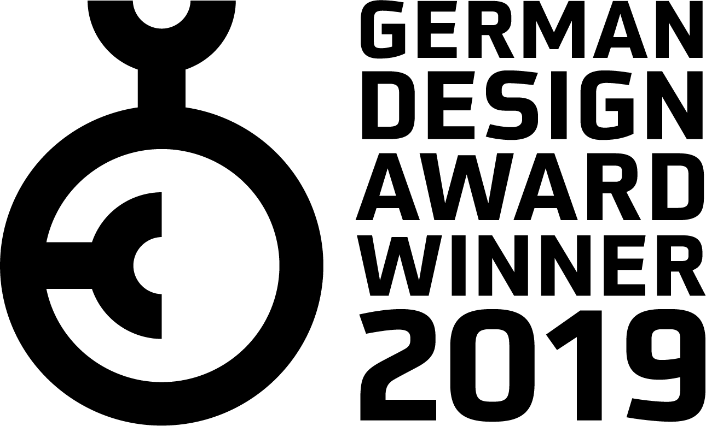
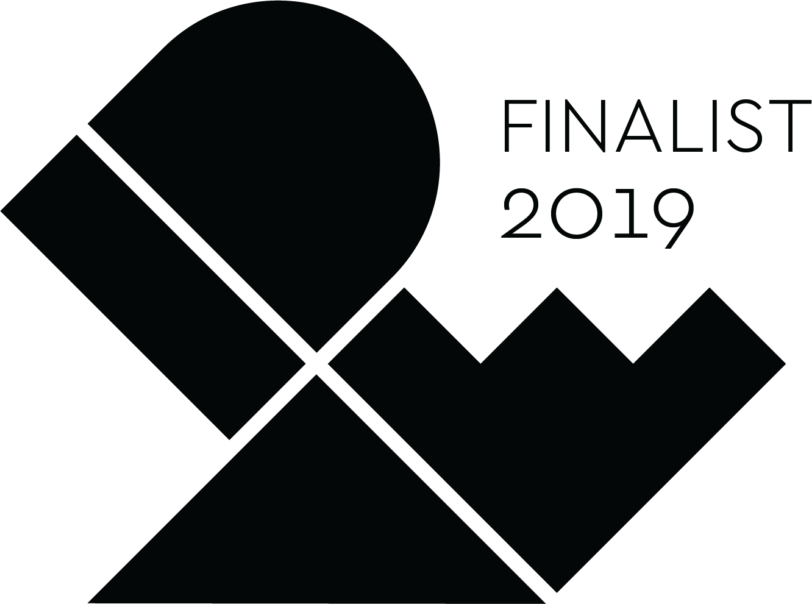
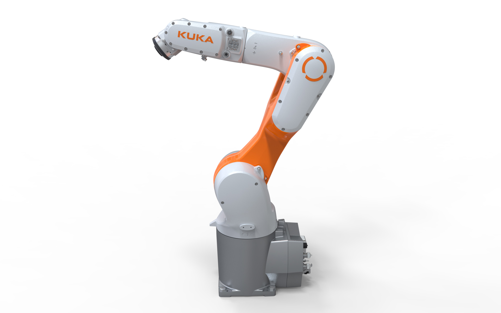
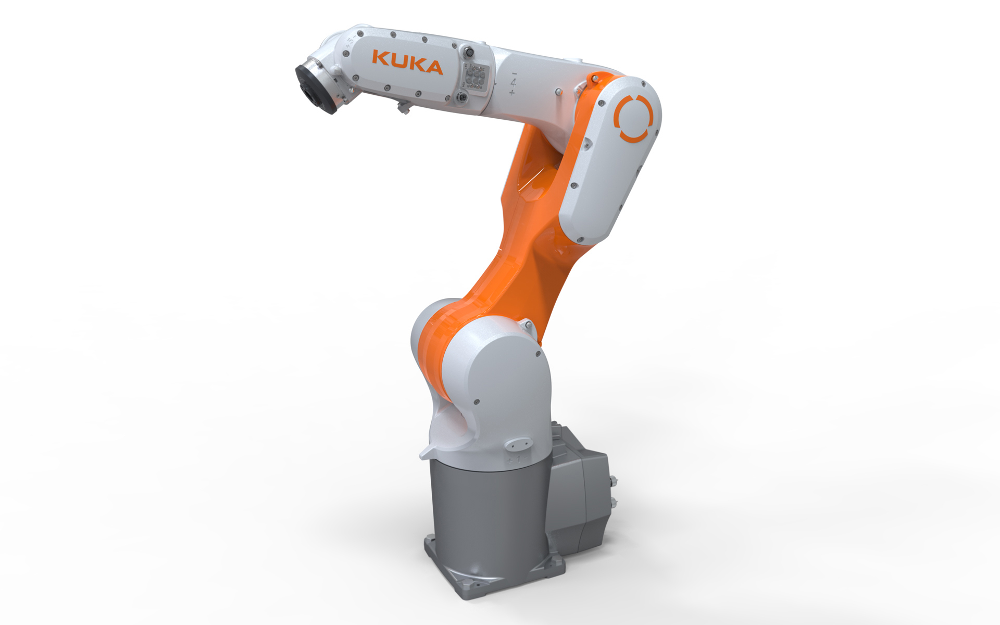
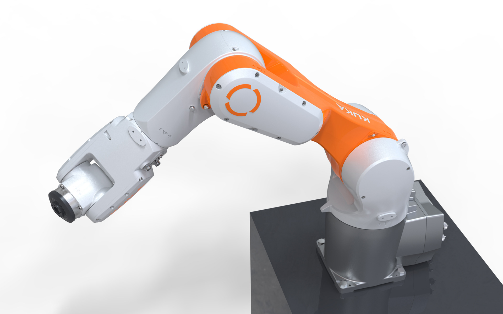

KUKA KR AGILUS-2
Industrial Robot
KUKA KR AGILUS-2
Industrieroboter
The KR AGILUS-2 is a compact 6-axis robot that is designed for maximum working speeds and impresses with its versatility, which enables new industrial applications.
Its small footprint and optional installation in floor, wall and ceiling position allow new automation
concepts and make it a versatile precision artist in the smallest space. It is also ideally suited for use
in clean rooms or in potentially explosive areas. It is also available in a water-proof design or in a
hygienic design for the food industry or the medical sector. In order to be able to integrate the robot
into compact cell concepts to save space, the energy supply
including compressed air lines has been fully integrated.
The design is characterized by the dynamic appearance of the robot. It emphasizes the light-footedness,
the spontaneous changes of direction and the self-understanding of the movements. Great care has been
taken not to waste any material that could affect the agility of the machine. The body has been reduced
to a minimum and trimmed to pure power.
Selić Industriedesign service: Design concept, design consultation, design sketches, CAD design support,
CAD freeform modeling, design refinement, processing of design data for the engineering department
Der KR AGILUS-2 ist ein kompakter 6-Achs-Roboter, der auf höchste Arbeitsgeschwindigkeiten ausgelegt ist und durch seine Vielseitigkeit besticht, die neuartige Einsatzbereiche ermöglicht.
Sein geringer Platzbedarf und ein wahlweiser Einbau in Boden-, Wand- und Deckenlage ermöglichen neue
Automatisierungskonzepte und machen ihn zum wandlungsfähigen Präzisionskünstler auf kleinstem Raum. Er ist
zudem bestens geeignet für den Einsatz in Reinräumen oder auch in explosionsgefährdeten Bereichen. Es gibt
ihn auch in spritzwassergeschützter Ausführung oder in einem hygienetauglichen Design für die
Lebensmittelindustrie oder für den medizinischen Sektor. Um den Roboter platzsparend in kompakte
Zellkonzepte integrieren zu können, wurde die Energiezuführung
inklusive Druckluftleitungen vollständig integriert.
Das Design ist vom dynamischen Auftreten des Roboters geprägt. Es betont die Leichtfu¨ßigkeit, die
spontanen Richtungswechsel und das Selbstverständnis der Bewegungsabläufe. Es wurde genauestens darauf
geachtet, dass kein überflüssiges Material verschwendet wird, das die Agilität der Maschine
beeinträchtigen könnte. Der Korpus wurde auf ein Minimum reduziert und auf pure Leistung getrimmt.
Selić Industriedesign Dienstleistung: Designkonzept, Designberatung, Designentwürfe,
CAD-Designunterstützung, CAD-Freiform-Modellierung und Detailgestaltung, Aufbereitung von Designdaten
für die Konstruktion



Images © Selić Industriedesign